The track is Slow Dive by Tineidae. Will get removed on demand.
Atmo is a Stand and shoot game for the Nintendo 3DS that is based on Valve's game Prospero that unfortunatelly got canceled in favor for Quiver, which then turned into Half-Life. It isn't know much about Prospero, but I guess it was extremely similar to the newer Quiver.
A tormented girl named Piik from the far stretching future wakes up from stasis inside an abandoned research facility owned by the Xin corporation. Piik was forced into psi research and there for can use psi to fight and solve riddles where average humans can't use psi at all. She's a unique specimen and are wanted for her psionic abilities. The corporation wont stop until she's captured and reused as a test subject for their heinous research.
 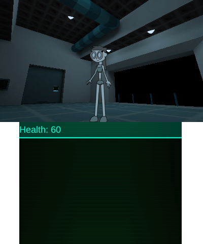
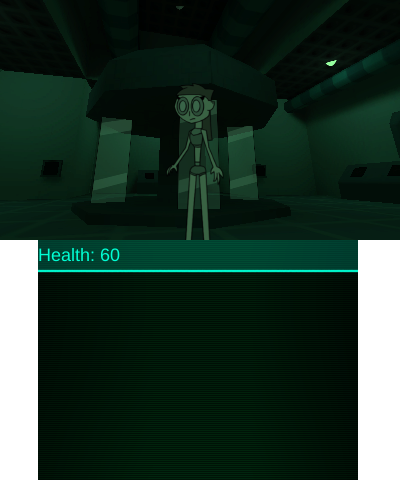
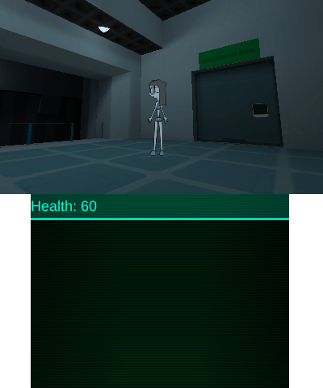
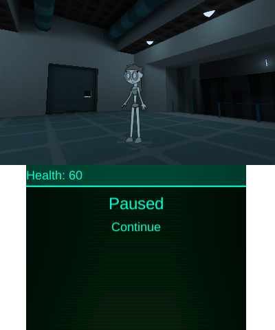
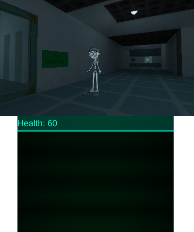
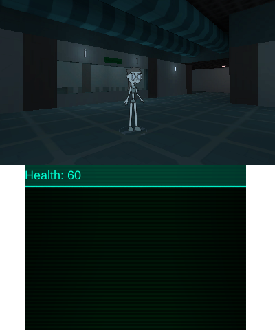
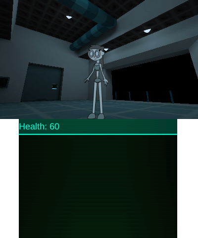
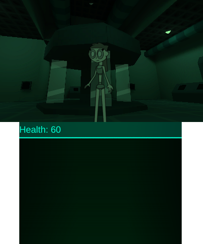
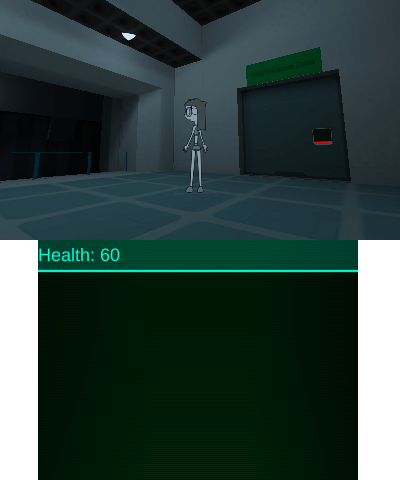
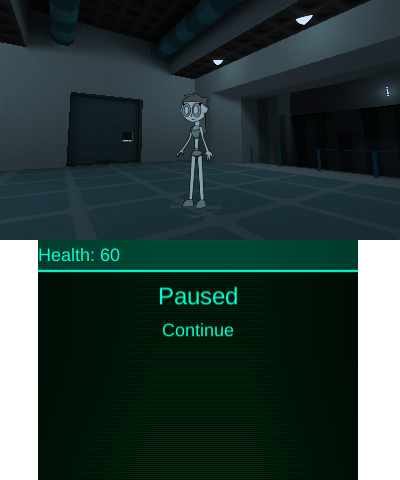
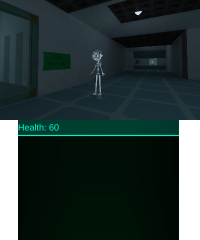
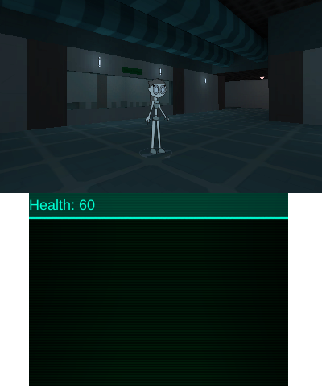
 Also the sprites aren't cutouts anymore.
Also the sprites aren't cutouts anymore.